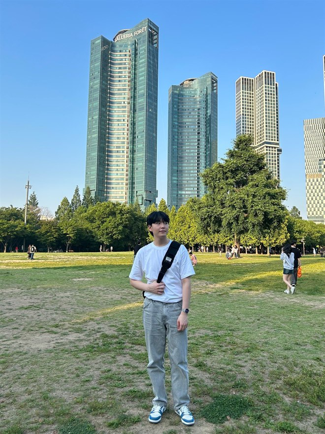

Taewoo Jo 조태우
Ph.D. Student, Department of Computer Science
Computer Graphics and Applications Lab (CGnA)
Yonsei University, Seoul, Republic of Korea
Yonsei · Gmail · Google Scholar · LinkedIn · CV
I am an extended reality (XR) and human-computer interaction (HCI) researcher, currently a full-time Ph.D. student in the Department of Computer Science at Yonsei University. I build and evaluate systems that read a user's implicit signals — gaze, head movement, body state — and turn them into interaction that requires no explicit command.
Before that, I received my M.S. in Intelligent Robotics and B.S. in Physics from the Gwangju Institute of Science and Technology (GIST), where I worked in the Human-Centered Intelligent Systems Lab on in-car XR, explainable autonomous driving (with MIT CSAIL), and assistive technology for people with low vision.
Human-Computer Interaction · Virtual & Extended Reality · Eye Tracking · Accessibility
News
- 2026 Can't Nobody Stop Me! accepted to IEEE TVCG.
- 2025 Manual-Free Gaze Interaction published in IEEE TVCG.
- 2024 WatchCap published in ACM IMWUT.
Research
Implicit Intention Prediction for Hands-Free XR Interaction
Interaction in XR still leans on explicit input — a controller press, a pinch, a dwell timer. I model what a user intends from gaze alone, using a Bayesian formulation of implicit intention, so that selection happens without any manual trigger. Related work in this line explores non-Euclidean spatial resets that keep users walking continuously in room-scale VR.
Enhancing Perception: Assistive Technology for People with Low Vision
People with peripheral vision loss struggle with visual scanning because their gaze movement adapts poorly to the impairment. I designed WatchCap, a wearable device that stimulates compensatory head movement to reshape how a user scans a scene. A user study with gaze analysis showed faster, more efficient scanning — reaching task-critical visual information sooner.
Explainable AI for Autonomous Vehicles
Joint work with MIT CSAIL on making an autonomous vehicle's decisions legible to its passengers. I led the XAI visualization system: given the hazard the vehicle's classifier acted on, a semantic segmentation model renders a visual cue marking exactly what the car reacted to, and when. Evaluated on real roads.
Wayfinding Assistance for Low Vision Pedestrians
A guidance system for low-vision pedestrians, built alongside a simulator that reproduces low-vision symptoms so designers can experience the condition first-hand and design the interface around it. AR- and map-based navigation were compared in a virtual walking environment to evaluate the pedestrian experience.
In-Car XR Platform
A platform for experiencing XR content inside an autonomous vehicle. On the systems side, I worked on fusing GPS and IMU data to track the vehicle in real time and to keep HMD tracking accurate in a moving car. I led content development: an event-detection algorithm recognizes driving events such as turning and braking, and folds them into the content — improving immersion and situation awareness while reducing sickness.
Publications
Bold denotes my name. * denotes equal contribution.
Journal & Conference Papers
-
Can't Nobody Stop Me! Non-Euclidean Portal Reset for Continuous Walking in Virtual Reality
IEEE Transactions on Visualization and Computer Graphics (TVCG), 2026 -
Manual-Free Gaze Interaction via Bayesian-Based Implicit Intention Prediction
IEEE Transactions on Visualization and Computer Graphics (TVCG), 2025 -
Decoding Your Ride: What Information Builds Human Trust on Real Roads?
GetMobile: Mobile Computing and Communications, 29(2), 2025 -
WatchCap: Improving Scanning Efficiency in People with Low Vision through Compensatory Head Movement Stimulation
Proceedings of the ACM on Interactive, Mobile, Wearable and Ubiquitous Technologies (IMWUT), 8(2), 2024 -
The Way of Water: Exploring the Role of Interaction Elements in Usability Challenges with In-Car VR Experience
Virtual Reality, 28(3), 2024 -
What and When to Explain? On-Road Evaluation of Explanations in Highly Automated Vehicles
Proceedings of the ACM on Interactive, Mobile, Wearable and Ubiquitous Technologies (IMWUT), 2023 Distinguished Paper Award -
Enhancing Wayfinding Experience in Low-Vision Individuals through a Tailored Mobile Guidance Interface
Electronics, 12(22), 2023 -
A Study on User Experience of Mobile Wayfinding Application for Low Vision Pedestrians
HCI Korea 2022 Best Paper Award
Education
-
2024 –
Ph.D. in Computer Science
Yonsei University -
2022 – 2024
M.S. in Intelligent Robotics
Gwangju Institute of Science and Technology (GIST) -
2017 – 2022
B.S. in Physics
Gwangju Institute of Science and Technology (GIST) -
2020
Exchange Student
KAIST
Experience
-
2020 – 2024
Research Assistant / Intern
Human-Centered Intelligent Systems Lab (HCIS), GIST
In-car XR systems, explainable AI for autonomous vehicles (with MIT CSAIL), VR-based low-vision simulation, multimodal stimulation in VR -
2022
Metaverse Fellowship
RAPA × Meta -
2022
Pitch Your Lab
GIST Metaverse Research Center, ISMAR 2022 -
2021
External Developer
Unity Simulation Development, Robotry Co. -
2019 –
Senior Mentee
Hanlim-Mirae Science Camp, The Korean Academy of Science and Technology (KAST)
Teaching
- Spring 2024 Computer Graphics — Teaching Assistant, Yonsei University
- Spring 2023 Human-Computer Interaction — Teaching Assistant, GIST
- 2021 – 2022 Mathematics in Civilization — Teaching Assistant, GIST
- Spring 2021 General Physics — Teaching Assistant, GIST
- Fall 2020 Introduction to Linear Algebra — Teaching Assistant, GIST
Awards & Honors
- 2023 Distinguished Paper Award, ACM IMWUT / UbiComp 2023
- 2022 – 2024 GIST Scholarship (M.S., Government Supported)
- 2022 Best Paper Award, HCI Korea 2022
- 2017 – 2022 GIST Scholarship (B.S., Government Supported)